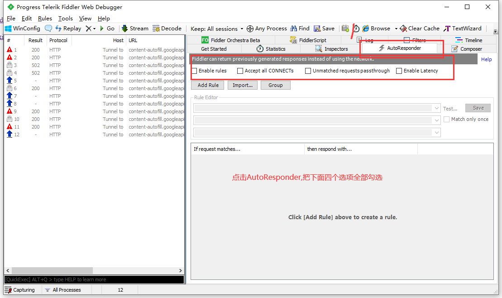
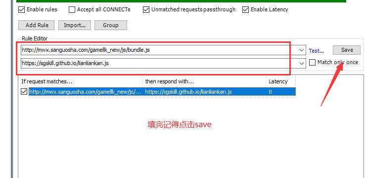

必备工具
1、Fidder，下载地址：https://www.telerik.com/fiddler （Fidder使用教程）
2、Chat PC/移动，下载地址：https://weixin.qq.com/
操作步骤
1、点击AutoResponer，勾选如下四个选项
2、点击Add Rule,按下图填写对应的地址
http://mwx.sanguosha.com/gamellk_new/js/bundle.js
https://sgskill.github.io/lianliankan.js
3、现在可以打开三国杀进行连连看游戏咯
PS：消一对即代表通关，请计算好时间再消